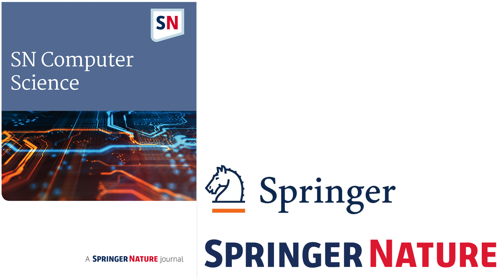

Springer Nature Computer Science
Section: Cognitive Computing and Digital Twin
Deepak Puthal, UAE University (deepak.puthal@ieee.org)
Amit Kumar Mishra, University West (akmishra@ieee.org)
Antonella Longo, University of Salento (antonella.longo@unisalento.it)
Chin-Teng Lin, UTS (Chin-Teng.Lin@uts.edu.au)
Scopus: Q1
Submission Deadline: OPEN
Cognitive Computing simulates human thought, enabling systems to learn, reason, and self-correct from unstructured data using AI. Digital Twins are real-time virtual replicas of physical systems, providing monitoring, simulation, and optimization. The powerful convergence creates "Cognitive Digital Twins," where virtual models gain intelligence to autonomously learn, predict failures, and self-optimize their physical counterparts.
Scope and Key Topics
- Architectures and frameworks for cognitive digital twins
- AI/ML for predictive modeling and optimization
- Real-time data integration and sensor fusion
- Edge AI for localized cognitive processing
- Security, privacy, and trust in twin ecosystems
- Smart city digital twins for urban planning
- Performance evaluation and systems metrics
- Ethical considerations and Explainable AI (XAI)
- ML and DL for advanced pattern recognition
- Reinforcement learning for autonomous control
- NLP and speech recognition for human interaction
- Knowledge representation and reasoning
- Cognitive robotics and autonomous systems
- Interoperability standards for digital twins
- Data management and lifecycle operation
- Storage and security for twin ecosystems
Submission Guidelines
Journal Homepage: link.springer.com/journal/42979
Submission Portal: editorialmanager.com/sncs/default2.aspx
Author Guidelines: springer.com/journal/42979/submission-guidelines
Important Note: While submitting your manuscript, please ensure you select "Cognitive Computing and Digital Twin" from the dropdown menu under the "General Information" section.